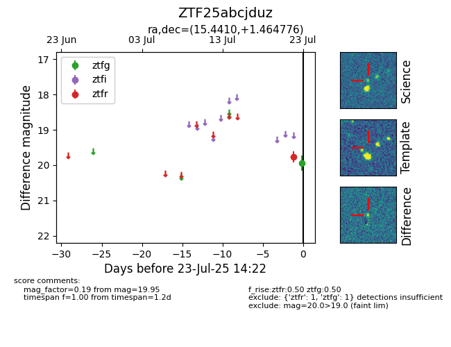

Target ZTF25abcjduz at 2025-07-23 14:22, see:
FINK: fink-portal.org/ZTF25abcjduz
Lasair: lasair-ztf.lsst.ac.uk/objects/ZTF25abcjduz
ALeRCE: alerce.online/object/ZTF25abcjduz
alt names
ZTF25abcjduz (ztf,fink)
coordinates:
equatorial (ra, dec) = (15.4410,+1.46478)
galactic (l, b) = (128.3118,-61.29906)
photometry
last ztfg=19.95, ztfr=19.77
1 ztfg, 1 ztfr detections
